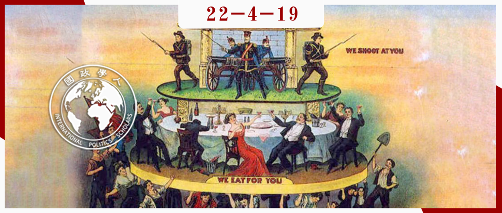
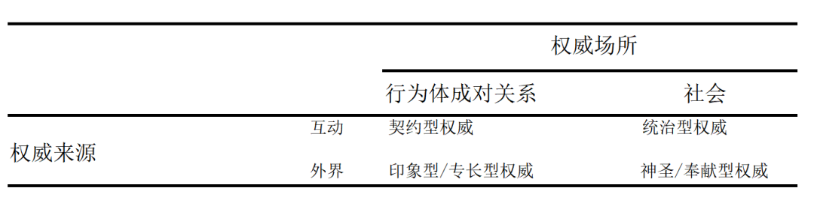

收录于合集

国际权威的四种类型学 ****
作者： Jorg Kustermans，安特卫普大学政治学系副教授；Rikkert Horemans，安特卫普大学政治学系博士
编译： 曾庆鸣（国政学人编译员，南开大学周恩来政府管理学院硕士生）
来源： Kustermans, J. and Horemans, R. (2022) “Four Conceptions of Authority in International Relations,” International Organization , 76(1), pp. 204–228.

导读
权威的场域只限于国内等级制吗？国际上存在权威吗？权威作为政治学核心概念似乎与“无政府状态”这一国际关系“原假定”格格不入。本文是《国际组织》2022年刊载的综述式文章（review essay），系统性梳理了“国际权威”这一概念的脉络。本文介绍了戴维·莱克、扎拉科尔与巴内特、张锋等学者在“国际权威”领域的经典研究，并根据权威的来源与场域确定了“国际权威”的类型学：契约型权威、宰制型权威、印象型权威和神圣型权威。相比于借鉴马克斯·韦伯一般意义上的、国内的权威类型学，本文将类型学标准限定在了国际视角，弥补了国际关系学对存在国际权威可能性的长期忽视，也为“国际权威”未来的研究议程指明了方向。
编译
01
引言
权威一直是政治学研究中的重要概念，但之于国际关系而言，权威能够扮演的角色就要小得多。许多国际关系学者于上世纪八十年代强调国际关系中的无政府状态假设，使权威在国际关系研究中未得到足够关注。学者们对无政府状态假设提出了质疑，这种质疑近年来更是有所增加。学界越来越认识到，无政府状态概念的具象化使人们对世界政治的理解出现了偏差。本综述基于研究国际关系权威的四部著作，着重探讨权威的概念的探讨。
学者们都同意国际权威的存在，且都从权威作为一种关系现象出发，认为一个行为体只有在其他行为体承认其权威的范围内才具有权威。本文为国际权威的争论作出了贡献。首先，通过划分四种权威概念的类型学以展示学界在国际权威议题上存在的系统性分歧。 契约型权威（authority as contract） ：利益驱动的讨价还价过程驱使从属者有条件地授予主导者以权威； 统治型权威（authority as domination） ：从属者错误地认识了主导者拥护和声称其体现的卓越标准的独断性？任意性； 印象型/专业型权威（authority as impression） ：从属者愿意接受具有高超技能或品行的主导者的领导； 神圣型/奉献型权威（authority as consecration） ：从属者承认主导者的支配地位为双方共同事业和关系增添了庄严感。本文表明，这些不同的概念源于对权威场所和来源的不同理解，因此至少部分地源于不同的社会理论承诺。
02
定义权威
本文将权威定义为被从属者视为正当的主导者的权力。 权力和正当性作为权威的两个构成要素具有多重含义。以施动者为中心的权力可定义为一个行为体影响其他行为体并指导其共同事务的能力。因此， 权威描述了其他行为体认为主导者的指导和影响是正当行为的情况 。从属者不仅容忍主导者的行为，还接受主导者的影响。 根据这个定义，作者将权威视为一种社会事实。行为体是否应该接受主导者权力的影响并不是探讨的重点，相反，作者认为非常有必要进行概念之间的区分：权威结构代表了结构性权力的影响，而权威本身是一种施动性权力（agentic power）。
对于正当性，作者对采用社会学方法来界定，并将其与接受（acceptance）联系起来。作者不想预先判断其他行为体接受主导者的权威的基础。这种接受可以建立在一种规范性信念的基础上，也可以建立在马克斯·韦伯所说的“奉献”上。作者并不先验地认为对规范正当性的考虑会在承认的社会学过程中发挥作用。

图一：权威类型
2.1 契约型权威
**
**
第一类权威概念由戴维·莱克在《国际关系中的等级制》（ Hierarchy in International Relations ）一书中提出，但也招致了许多学者在学术作品中对等级制观点的批评。
契约型权威指的是，从属者在判断从属行为符合自身利益时承认主导者权威的情形。从属者估计从属于主导者会带来更多的安全或财富。同理，主导者判断为从属者主持秩序和提供产品的成本将低于与从属者竞争的成本。
契约型权威将权威置于两个国家之间的成对关系（dyadic relations）中。诚然，权威的成对关系与社会契约传统格格不入，因为后者将权威置于社会各成员与他们决定服从或建立起来的统治者或政府之间的关系中。原则上，莱克接受了这一点，然而当他将这一观点移植到国际关系中时，他并未假设主导国家的权威是由国际社会内的国家集体授予的。相反，他认为权威只存在于主导国家和从属国家之间的关系中。
就权威的来源而言，契约型权威是通过互动产生的。 更具体地说，这种权威是在谈判过程结束时，从属者“授予统治权”给主导者。通过谈判过程，相关的两个国家决定主导国的权力范围将如何以及它必须提供什么产品。由此产生的协议以双方承诺尊重的契约密封。 然而，任何协议总是临时性的，行为体会不断地计算自己做出的选择，例如一旦主导国扩大了权力范围，从属国家便会质疑服从主导国所获得的安全或财富的价值。
因此， 契约型权威设想对权力的体验以一种严格的功利主义（utilitarian）模式产生。 行为体被描绘成以一种计算的态度管理他们的社会关系——因此权威的范围经常有被越界的危险，而对权威的承认也经常有被撤销的危险。权力只有在这个词最薄弱的意义上才被视为是正当的。权力由同意获得，但这种同意并不被认为是由任何更深层次的规范或情感信念所决定的。这就提出了一个问题，即人们是否真的以如此冷酷的功利主义的方式来体验这个世界。 契约型权威采用了功利主义的经验概念，将经验概念掏空，忽略了它的价值负载和情感性。从其他概念的角度来看，这也导致它错误地描述了权威的性质。
2.2 宰制型权威
**
**
宰制型权威体现在奥莱·雅各布·撒丁（Ole Jacob Sending）的《专门技能政治学：争夺全球治理权威》（ The Politics of Expertise：Competing for Authority in Global Governance ）以及扎拉科尔（Ayse Zarakol）和巴内特（Michael N. Barnett）编著的书中。 它坚持认为权威源于强制实施的专断的优秀标准，解释了历史上占主导地位的群体更容易强制施加这种价值判断的标准。 通过强加自己的标准，主导者能够在不需要费任何力气的情况下统治社会。当主导者强制实施其标准成功时，从属者不再勉强地被迫接受主导者统治的任意性。相反，它们开始欣然“尊重、钦佩和爱戴”那些支配他们的人。
将权威视为宰制的理论家并不否认权威可以被用于在道德上值得称道的用途。然而他们怀疑这种统治型权威的善意超过了其背后的象征性暴力，并表达了一种明确的规范偏好，即平等行为体之间的团结关系优于等级制权威。 总而言之，统治型权威表明其对权威的道德价值持怀疑态度。
宰制型权威将社会视为权威的场所，并将行为体的互动过程视为其来源。正是这种结合导致权威从根本上说是一种统治模式。这也是那些看到了统治型权威中的压迫性、象征性和暴力性质的人产生不满的原因。 将社会视为权威的场所意味着拥有这种权威不仅仅定义了两个行为体之间的关系，而且描述了一个行为体或群体在某个社会或社会空间中所占据的位置。
2.3 印象型/专业型权威
**
**
印象型权威在张锋的著作《王霸中国：东亚历史上的大战略和国际机制》（ Chinese Hegemony: Grand Strategy and International Institutions in East Asian History ）中占有一席之地。在学术研究中，通常将“专业知识”或“道德品质”作为无可争辩的权威来源。 该模型假设，当面对具有超群技能或真正高尚品德的行为体时，人们往往会接受其领导。 印象型权威抓住了权威经验维度的一个重要方面：从属者不一定为主导者权威的影响所困，也可能将其理解为 “一种创造性的、累积性的力量”。主导者的印象型权威会逐渐消退，当从属者开始觉得主导者的权威印象不再深刻时，他们将不再追随和承认主导者。
印象型权威对权威来源的本体论地位的理解解释了其对权威的创造性、逐渐积累的特征的直觉。 它假定权威的来源存在于行为体的互动之外。克里斯玛型权威（魅力型权威）植根于主导者的魅力。马克斯·韦伯将魅力定义为“个人人格的某种品质，凭借这种品质，他被认为是非凡的。“ 张锋认为，儒家传统是中国皇帝获得跨越不同政体和国家的权威的外部来源 。张锋解释说，当从属国家认为中国在按照“优雅和人道的上位义务”行事时，就认同中国的印象型权威。 在这种情况下，它们将“接受对中国的从属角色，将自己认定为中国等级分化的外部附庸，并履行他们对中国的忠诚和正直的义务。”在这种观点中，并不是中国的行为直接解释了其权威，而是对这些行为源于中国体现的“文明”的信念，这是一种像“道德上的善”和“知识”一样的权威的外部来源。
在印象型权威中，对权威场所的成对理解导致了从属者不能感到被权威所束缚，它对权威来源于互动之外的认识解释了其关于权威经验的结论。 张峰将权威描述为一种“基于道德和情感的关系”，行为体在这种关系中具有“情感义务”，且主导者和从属者根据“情感理性”的逻辑行事。至关重要的是，所有这些都具有积极的意味。当知道自己被一个体现“文明”（或“道德”或“知识”）的行为体所领导，就会产生信任。但是这种信任是有条件的：如果从属者怀疑主导者不再体现这种权威来源，则假定权威关系很快就会结束。它可能仍然是等级制的，但将不再是一种权威关系。
2.4 神圣型/奉献型权威
**
**
神圣型权威体现在人类学家大卫·格雷伯和马歇尔·萨林斯的著作《论君主》中。 在政治学理论中，汉娜·阿伦特表明了神圣型权威的重要性：她指出这个概念的词源是拉丁语动词augere，即增强。阿伦特认为权威能够增强权力，但这并不意味着主导者变得更加强大，而是权威为主导者的行为增加了“庄严神圣感”。
关于权威场所和权威来源的本体论地位的理论预设的特殊组合很重要。作者之前论证过，从统治型权威的角度来看，将社会视为权威的场所意味着个人对权威的反对是徒劳的，那些嘲弄权威的个人行为体有被排斥的风险。
将权威视为一种神圣感的理论家承认权威的来源存在于行为体的互动之外。这导致他们估计，从属国家对神圣型权威的体验可能不像统治型权威所假设的那样具有压迫性。 第一个原因是 外部来源通常被视为一种生产力 。复兴的前景抵消了压迫的风险。第二个原因是 权威行为体与外部来源的关联是偶然的 。对权威的持续承认取决于主导者与外部来源的持续联系。如果这种关联变得不那么明显，从属者可能会撤回其承认。最后一个原因是， 权威的外部来源也可以由从属者体现 。从属者可以声称拥有对权威来源的更高权限，从而挑战主导者的权威。外部来源不是任何人制造的，因此也不受任何人控制。被视为体现外部权威来源的主导者会获得一种可信赖的光环，而这些主导者的共同努力会使其获得一种值得（信任）的氛围。将权威视为奉献的理论对从属行为者的经验持有更为模糊的观点。
03
国际权威、国家主权与去殖民化
这四个概念中的每一个都为国际权威与国家主权的关系提供了不同的视角。 契约型权威的解释是国际权威的出现使国家主权完好无损。统治型权威的解释是国际权威的巩固使国家主权成为空想。印象型权威和神圣型权威则认为相信国际权威可以加强国家主权。
另一种观点认为，主权是一种取决于国际社会承认的地位。 某些政体可能会履行与主权国家相关的所有职能，但如果国际社会不授予它们这种地位，它们将无法从与之相关的权利和特权中受益。可以补充的是，承认一个政体的主权地位在很大程度上取决于该政体遵守合法成员资格和合法行为的共同规范。这些论点与宰制型权威产生了共鸣，它特别强调这些规范的偶发性以及主导国家在制定这些规范、捍卫并经常阻止政体作为平等成员进入国际社会方面的决定性影响。
04
结论
本文的核心是对四种权威概念进行识别。本文表明，每个概念都以权威的场所和来源的特定理解为前提，并且每个概念都表达了对从属者对权威的体验的不同直觉。作者认为，这些不同的直觉源于从属者对场所和来源的特殊理解。文中关于国际权威和国家主权关系的一小章节有助于探讨这种类型学的分析性。
作者将权威定义为被视为是正当的权力。这是权威作为正当权力的定义的一种变体，意在表明对权威的社会学分析的深思熟虑的关注。 作者还没有对这一现象进行规范性分析。然而，在撰写这篇文章时， 作者发现在权威的社会学分析中，政治偏见的侵入是难以避免的。权威是一个社会事实，但它也是一个政治概念。研究国际权威的学者应该更多地意识到这一概念的这种双重性质。 培养这种反思性可以从探索这四个权威概念与更广泛的哲学传统之间的密切关系开始。契约型权威是否受到自由哲学的启发？统治型权威是否受到激进哲学的启发？神圣型权威是否受到保守主义哲学的启发？不同的社会理论直觉和承诺在很大程度上解释了不同权威概念的表达，但也不应忽视政治理论的先验对理解权威的影响。
4.1 权威类型学是否详尽？
**
**
作者提出的概念已经在权威的稳定性假定方面有所不同， 契约型权威和印象型权威的假定都是不稳定的，神圣型权威和统治型权威则共享稳定的假定。
4.2 四种不同的权威概念如何相互关联？
在对国际权威与国家主权关系的讨论中，作者将这四个概念视为互补的模型。 它们的结合或多或少产生了国际关系中的权威是什么或可能是什么的全面图景。同时，他们之间也存在竞争的一面。尤其是从属者对权威经验的各种评估似乎是不相容的。这提出了一个问题，即积极或矛盾的体验何时会占上风，以及何时会变成消极的。
正如韦伯所认为的那样，时间可能是一个关键变量。一个简单的假设是，新的权威给人留下深刻的好印象，而旧的权威给人留下了压迫的印象。然而， 神圣型权威表明，旧的权威也可以继续给人留下深刻的好印象 。在社会学中，学者们根据根深蒂固的权威结构中“魅力元素”的持久性，将这种可能性理论化。更广泛环境的特征可能是这里的一个关键因素。在不断变化或不确定的环境中，新的权威可以更快地出现，但旧的权威也有更多的机会重新确立自己的地位，并让从属者相信其持续的相关性。 不确定的环境为旧权威提供了发起和神圣化集体计划与项目的机会。 这可以防止旧权威变得陈旧。 在一个不确定性较小的环境中，旧权威被认为具有压迫性的可能性会变得更高。但是神圣型权威仍然坚持认为这种结果并非不可避免。除了承认时间和环境的影响之外，它还指出了（联合）仪式行为（ritual action）在确保对权威的持续接受方面的关键作用，这一点在万隆会议的案例中得到了充分展示。 统治型权威的理论家认为，对权威的专断主张总是有被揭露为虚假或捏造的风险。 仪式行为，由于其具身性（embodied nature），不会冒同样程度的风险。因此，仪式的表现应该在维持旧权威方面发挥核心作用。
这些命题的有效性需要通过实证研究来确定，重点是从属者的体验，这引出了最后一个问题。作者意识到这个问题非常重要，但还没有一个可靠的答案。
**
**
4.3 是否有可能研究国际关系中的情感体验？
**
**
在研究世界政治中的情感的学者中，有一种方法论倾向，即优先研究情感话语和表现，而不是尝试直接记录情感体验。在某种程度上，作者建议将仪式行为纳入对国际权威的描述，也建议进一步研究情感表现。然而，作者同时坚持尝试更直接地捕捉情感体验——例如通过民族志的方法。作者认为，如果放弃这种经验主义的野心，对国际权威性质的解释可能会再次出现偏见。
词汇整理
契约型权威 authority as contract
宰制型权威 authority as domination
印象型/专业型权威
authority as impression
神圣型/奉献型权威
authority as consecration
审校 | 陈思涵 陈勇
排版 | 王佳怡 臧泽华
文章观点不代表本平台观点，本平台评译分享的文章均出于专业学习之用, 不以任何盈利为目的，内容主要呈现对原文的介绍，原文内容请通过各高校购买的数据库自行下载。

国政学人
支持学术公益与知识传播
微信扫一扫赞赏作者 __赞赏
已喜欢，对作者说句悄悄话
取消 __
发送给作者
发送
最多40字，当前共字
上一页 1/3 下一页
长按二维码向我转账
支持学术公益与知识传播
受苹果公司新规定影响，微信 iOS 版的赞赏功能被关闭，可通过二维码转账支持公众号。